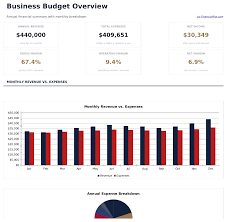

Portfolio Entreprise — Stage TFE 2025-2026
LA DEFENSE
BELGE
Audit strategique de l'Ecole Royale Militaire
et du departement MECA / RAS Lab
Scroll
Audit strategique de l'Ecole Royale Militaire
et du departement MECA / RAS Lab

La Defense belge est un Service Public Federal (SPF), place sous l'autorite du Ministre de la Defense. L'Ecole Royale Militaire (ERM) est un etablissement d'enseignement superieur militaire cree par la loi du 18 mars 1838.
Organisme d'interet public de categorie A — personnalite juridique propre, soumis a la loi du 16 mars 1954. Pas de numero BCE classique ni de publication au Moniteur Belge via ejustice.just.fgov.be (reserve aux entites commerciales).
Ministere de la Defense — Ministre Ludivine Dedonder (2020-2024), puis Theo Francken (2025-). Budget vote annuellement par le Parlement federal.
Loi du 18 mars 1838 organique de l'ERM, modifiee par la loi du 1er aout 1924. Arrete Royal du 26 septembre 2002 fixant le statut du personnel.

En tant que SPF, la Defense ne depose pas de comptes annuels a la BNB (nbb.be). Son financement provient du budget federal, vote par le Parlement.
5,99 milliards EUR — en hausse pour atteindre l'objectif OTAN de 2% du PIB d'ici 2035. Croissance annuelle de ~10% depuis 2022.
Personnel : ~55% | Investissements (equipement) : ~25% | Fonctionnement : ~20%. Le plan STAR prevoit un reequilibrage vers les investissements.
L'ERM beneficie d'un budget propre pour la recherche (~15M EUR/an). Le RAS Lab est finance par des projets federaux (GRAND, FED-tWIN) et europeens (EDF).

"La Defense belge protege 11,5 millions de citoyens et contribue a la securite collective de l'OTAN et de l'UE. Avec 26 000 militaires et civils, elle deploie des capacites dans 5 composantes — Terre, Air, Marine, Medicale et Cyber. Face aux menaces hybrides et technologiques du XXIe siecle, la Defense investit massivement dans l'innovation via le plan STAR 2030 : drones autonomes, intelligence artificielle, cybersecurite et robotique. L'Ecole Royale Militaire, son bras academique, forme les officiers de demain et abrite des laboratoires de recherche de pointe comme le RAS Lab, ou des projets comme VIMO repoussent les frontieres de la navigation autonome GPS-denied."
Militaires et civils au service de la securite nationale
En euros, en croissance vers l'objectif OTAN 2%
Operations internationales OTAN, UE et ONU

Proteger l'integrite du territoire belge, contribuer a la securite collective (OTAN/UE), et apporter une aide a la Nation en cas de crise. Pour l'ERM : former les futurs officiers et mener une recherche scientifique d'excellence au profit de la Defense.
Devenir une force de defense agile, technologiquement avancee et resiliente, capable de repondre aux defis securitaires du XXIe siecle. L'ERM vise a etre un pole d'excellence academique et de recherche reconnu internationalement dans le domaine militaire.
Adaptation du modele d'Osterwalder a une institution publique de defense et de recherche.

La Defense belge mise sur l'innovation technologique comme multiplicateur de force, via le plan strategique STAR 2030 et des laboratoires de recherche specialises.
Security, Technology, Ambition, Resilience — un plan d'investissement de 10+ milliards EUR sur 10 ans. Acquisition de F-35, navires, drones et systemes de cybersecurite.
Le laboratoire Robotics & Autonomous Systems de l'ERM developpe des solutions de navigation GPS-denied, d'essaims de drones et de perception multi-capteurs. Le projet GRAND est finance dans ce cadre.
5e composante creee en 2022, premiere en Belgique. Cyber-defense, cyber-intelligence et operations offensives dans le domaine numerique.
Partenariats avec universites (VUB, KU Leuven, ULiege), programmes FED-tWIN pour chercheurs partages, et participation au Fonds Europeen de Defense (EDF).


Bien qu'il n'y ait pas de "concurrence" au sens commercial, on peut comparer la Defense belge a des forces armees de taille et d'ambition similaires au sein de l'OTAN.
| Critere | Belgique | Pays-Bas | Danemark | Norvege |
|---|---|---|---|---|
| Effectifs | 26 000 | 42 000 | 20 000 | 23 000 |
| Budget (Mrd EUR) | 5,99 | 15,4 | 7,7 | 9,8 |
| % PIB Defense | 1,13% | 1,7% | 1,65% | 1,8% |
| Academie militaire | ERM (1834) | KMA (1828) | FAK (1713) | KS (1750) |
| Innovation R&D | RAS Lab, STAR | TNO | DDI | FFI |
L'ERM se distingue par son integration recherche-enseignement unique et ses partenariats civils (VUB). Le RAS Lab est reconnu en Europe pour la navigation autonome GPS-denied.
La Belgique reste en dessous de l'objectif OTAN de 2% du PIB, contrairement a la plupart de ses voisins. Le recrutement reste un defi majeur.

Appliquee a une institution publique, la segmentation concerne les "beneficiaires" et "parties prenantes" de la Defense.
Ciblage : Jeunes de 18-26 ans pour le recrutement, chercheurs doctorants pour l'ERM, PME innovantes pour la defense.
Positionnement : Force armee polyvalente, technologique et deployable, avec un pole d'excellence academique unique en Belgique.

Analyse du cycle de vie du "produit" de recherche principal du RAS Lab : les systemes de navigation autonome pour drones sans GPS.
Lancement du RAS Lab, premiers prototypes de navigation VIO. Projet GRAND initie avec financement federal. Faible maturite technologique (TRL 3-4).
Multiplication des projets (VIMO, FED-tWIN). Premiers resultats concrets : pipeline ROS2 valide, vols de test. Publications scientifiques. Partenariats europeens (EDF). TRL 5-6.
Integration dans les systemes operationnels de la Defense. Transfert technologique vers l'industrie. Standardisation des solutions. TRL 7-9.
Evolution vers des systemes multi-robots, essaims autonomes, et integration IA avancee. Le domaine se reinvente en permanence.


Diagnostic base sur les donnees budgetaires publiques de la Defense belge (source : SPF Budget, rapports annuels Defense).
Trajectoire budgetaire ascendante soutenue. Plan STAR securise les investissements a long terme. Diversification des financements (EDF, bilateral).
Retard par rapport a l'objectif OTAN 2%. Cout du personnel eleve (55%). Pression sur le fonctionnement pour financer les investissements. Inflation des couts d'equipement.
Synthese strategique de l'analyse de l'entreprise.
La Defense belge et l'ERM traversent une periode charniere. Le plan STAR 2030 offre une feuille de route ambitieuse, et le contexte geopolitique post-2022 a accelere la prise de conscience politique. Les forces de l'institution — son excellence academique, ses partenariats et son ancrage OTAN — sont des atouts majeurs. Cependant, le defi du recrutement et le retard budgetaire restent les principales faiblesses a combler. L'ERM et le RAS Lab, par leur positionnement a l'intersection recherche-defense, sont bien places pour capter les opportunites liees a l'IA, aux drones et a la cybersecurite, a condition d'accelerer le transfert technologique vers les unites operationnelles.
Etudiant ingenieur industriel
Master en Electricite & Automatisation
ISIB — Bruxelles